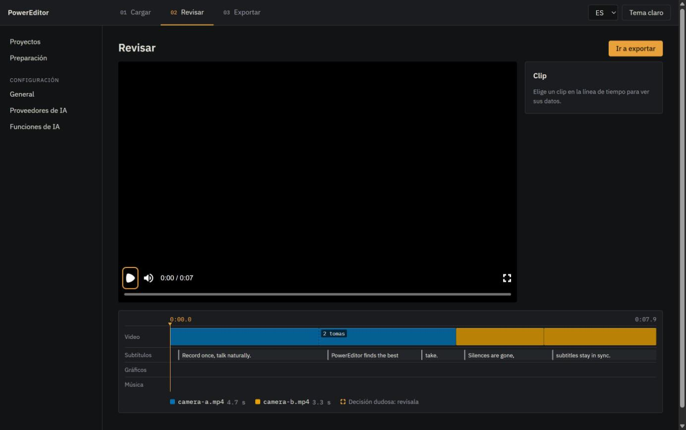
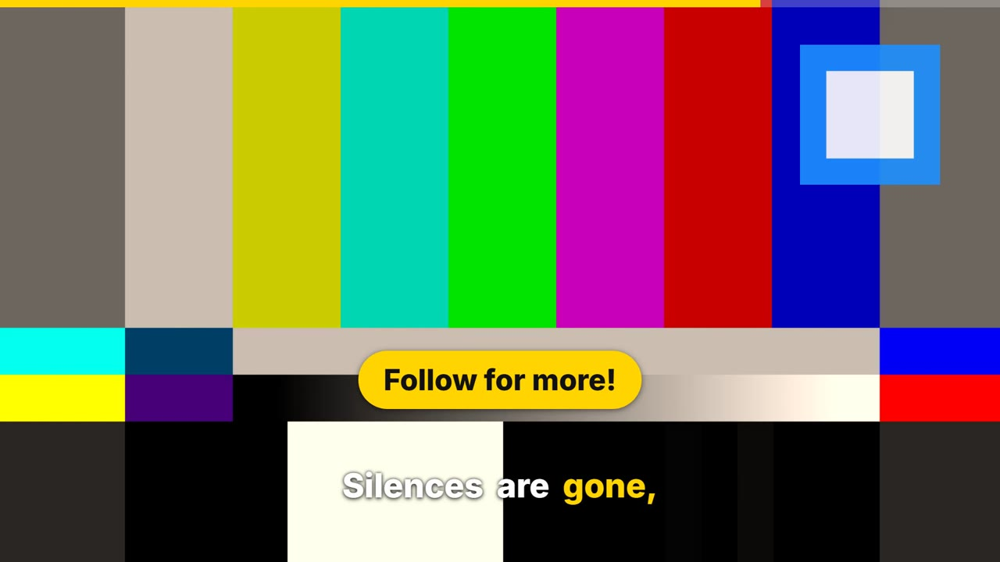

PowerEditor
Record once. Get the edit.
Picks your best take, cuts the silences, syncs the subtitles and exports a finished video. Runs on your own PC.


Record once. Get the edit.
Picks your best take, cuts the silences, syncs the subtitles and exports a finished video. Runs on your own PC.

